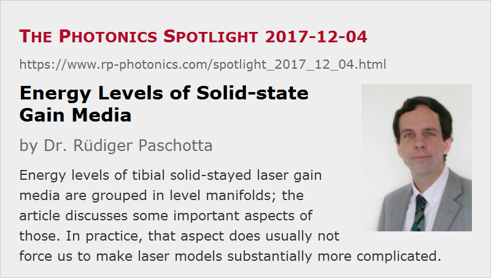

Energy Levels of Solid-state Gain Media
Posted on 2017-12-04 as a part of the Photonics Spotlight (available as e-mail newsletter!)
Permanent link: https://www.rp-photonics.com/spotlight_2017_12_04.html
Author: Dr. Rüdiger Paschotta, RP Photonics Consulting GmbH
Abstract: Energy levels of tibial solid-stayed laser gain media are grouped in level manifolds; the article discusses some important aspects of those. In practice, that aspect does usually not force us to make laser models substantially more complicated.

In introductory textbooks on laser physics, one often considers only very simplified energy level schemes, where the laser-active ions have only a few well-defined levels. Here, I explain some important details of solid-state gain media, which are in some respects more complicated – but still not too difficult to handle with a little additional knowledge.
Energy Levels of Nd:YAG
As an example, let us consider the probably most popular solid-state gain medium, which is Nd3+:YAG – see the level diagram. Each of the labeled “levels” is not really an energy level, but a level manifold consisting of several levels. For example, we have the ground state manifold 4I9/2, where the diagram shows multiple sub-levels.

If you consider the most often used pump transition at 808 nm, you will see that it involves multiple sub-levels of the ground state manifold as well is multiple sub-levels of an excited manifold. At first glance, this looks frightening: will we have to consider all possible pairs of sub-levels, each one having different transition cross sections? In addition, do we need to calculate the fractional populations in the ground-state sub-levels with a Boltzmann distribution? And how could one ever measure the data for all those transitions, being so close in wavelength that they can hardly be resolved experimentally?
Well, the reasoning behind those questions is based on real physics, but in practice we can quite simply work with so-called effective transition cross sections. The underlying idea is that we just don't care about the details of all those sub-levels – what is relevant is only (a) the population of each level manifold as a whole and (b) the transition rate between each pair of manifolds which is caused e.g. by pump light at a particular optical wavelength. The proportionality factor between the transition rate for a single ion (in the given starting manifold) and the photon flux is called the effective transition cross section, which implicitly takes into account all the sub-level details and can be directly measured without caring about them. So overall the microscopic details which we skip that way are both extremely difficult to measure and irrelevant in practice.
In crystalline gain media, it is sometimes possible to well resolve the different sub-levels and therefore to measure the separate cross sections for all the transitions. Nevertheless, it is usually more convenient to work with effective cross sections. Note that we can anyway not populate only a specific sub-level by optical pumping, since the surroundings of each laser-active ion interact with it, and that interaction leads to rapid shuffling of the ions between all the sub-levels of its current level manifold – typically, thermalization (i.e., finding the final sub-level populations) takes only some picoseconds after pumping.
Of course, you should never apply the mentioned Boltzmann factors for sub-level populations in addition to using effective transition cross sections – they are already built into those! In scientific publications, one should be careful to indicate where the transition cross sections are understood as effective cross sections, if a misunderstanding could arise otherwise.
You now understand why laser models for solid-state lasers normally consider only the populations of manifolds, rather than those of all the sub-levels. This is not an approximation, but a fully justified simplification – except for some rare situations:
Influence of Finite Thermalization Times
In most practical cases, the picosecond-scale thermalization within level manifolds is so fast that it can be considered as instantaneous e.g. in laser models. Only under special circumstances, that thermalization time is relevant: for optical transitions driven by intense ultrashort pulses which (a) have a duration of the thermalization time or less and (b) have a sufficiently high optical fluence to substantially modify the populations of the level manifolds. In such cases, one obtains e.g. gain saturation of an amplifier transition which behave somewhat differently than for a medium with instantaneous thermalization. In principle, one can make sophisticated laser models taking into account such effects, but those would be difficult to use, since it would be very hard to obtain all the required microscopic data. One might thus take a pragmatic approach and make a crude model with a phenomenological (measurable) parameter for that effect.
Level Lifetimes
Similar remarks as for transition cross sections apply to excited state lifetimes. One usually does not care about the picosecond-scale lifetimes of all the different sub-levels. What is relevant is only the lifetime of the whole manifold, which (for forbidden transitions in solid-state gain media) can be orders of magnitude longer – typically microseconds to milliseconds.
Interestingly, significant lifetime broadening of the transitions is caused by the mentioned rapid shuffling on a picosecond time scale, whereas the much longer lifetime of the manifold as a whole is irrelevant for the bandwidth of any optical transition.
Further Reading
Maybe you are also interested in reading two related older articles on Thermal Equilibrium in Laser Crystals and Lasers Like it Cool.
This article is a posting of the Photonics Spotlight, authored by Dr. Rüdiger Paschotta. You may link to this page and cite it, because its location is permanent. See also the RP Photonics Encyclopedia.
Note that you can also receive the articles in the form of a newsletter or with an RSS feed.
Questions and Comments from Users
Here you can submit questions and comments. As far as they get accepted by the author, they will appear above this paragraph together with the author’s answer. The author will decide on acceptance based on certain criteria. Essentially, the issue must be of sufficiently broad interest.
Please do not enter personal data here; we would otherwise delete it soon. (See also our privacy declaration.) If you wish to receive personal feedback or consultancy from the author, please contact him e.g. via e-mail.
By submitting the information, you give your consent to the potential publication of your inputs on our website according to our rules. (If you later retract your consent, we will delete those inputs.) As your inputs are first reviewed by the author, they may be published with some delay.
|  |
If you like this page, please share the link with your friends and colleagues, e.g. via social media:
These sharing buttons are implemented in a privacy-friendly way!